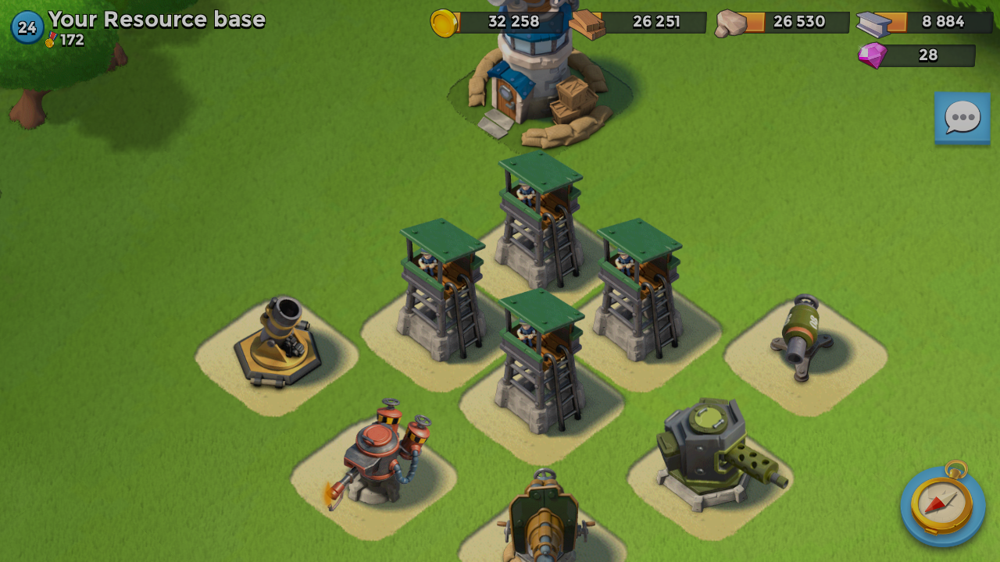
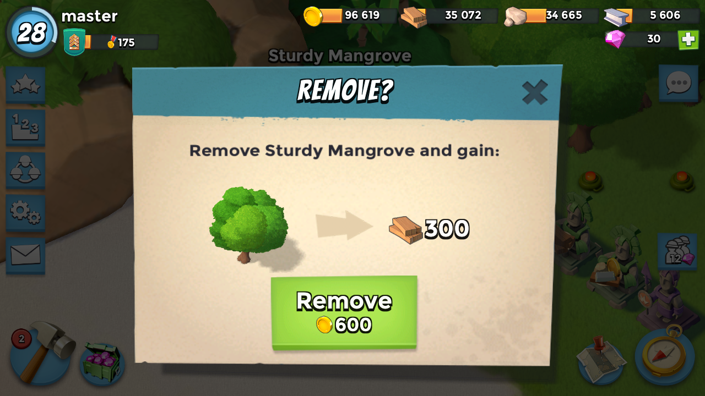

Tips
-

Tips for arranging things
You should not do this. Other players could shoot booms in between the 4 sniper towers and damaged all 4 sniper towers.You should put the sniper towers or any thing ,2 or more spaces away from each other. If you are attacking doctor T 's island, look for things like machine guns or sniper tower (anything that could hurt your troops) and see if they are 1 or 0 spaces away from each other .Then shoot in between them and you would damage them.
-

TREES
FEBRUARY 3, 2023You can remove trees on your home base or your resoures base. Althought you have to have to pay gold, you can get woods and space for your equiptment.